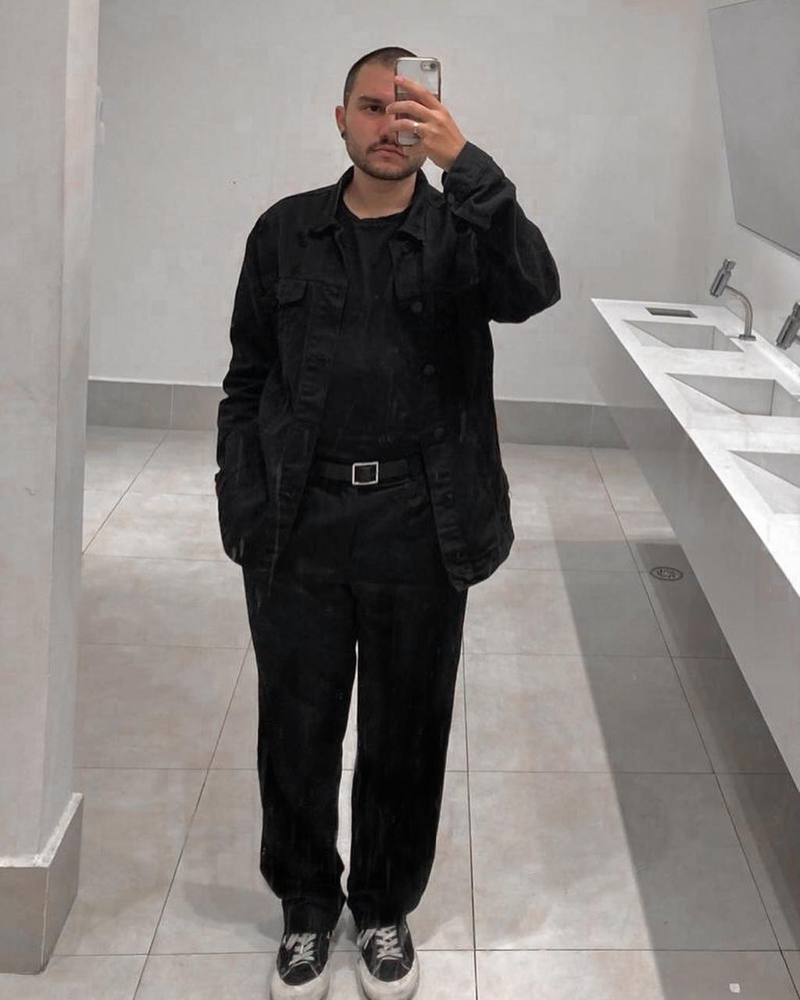

Estudante focado em resultados, com interesse em desenvolvimento backend — onde a lógica e a arquitetura dão vida às aplicações.

Olá! Sou Allan da Silva Ramos, estudante do 2º semestre do curso de Desenvolvimento de Software Multiplataforma na FATEC Jacareí (ingresso em 2025). Minha trajetória na tecnologia começou pela influência de pessoas próximas, e desde então venho descobrindo na área um campo cheio de possibilidades reais.
Tenho especial interesse em desenvolvimento backend — servidores, banco de dados e a lógica que sustenta as aplicações. Gosto de entender como as coisas funcionam por baixo dos panos e de construir soluções que realmente funcionam na prática.
Sou focado em resultados e acredito que a melhor forma de aprender é colocando a mão na massa. Cada projeto é uma oportunidade de crescer e entregar algo concreto.